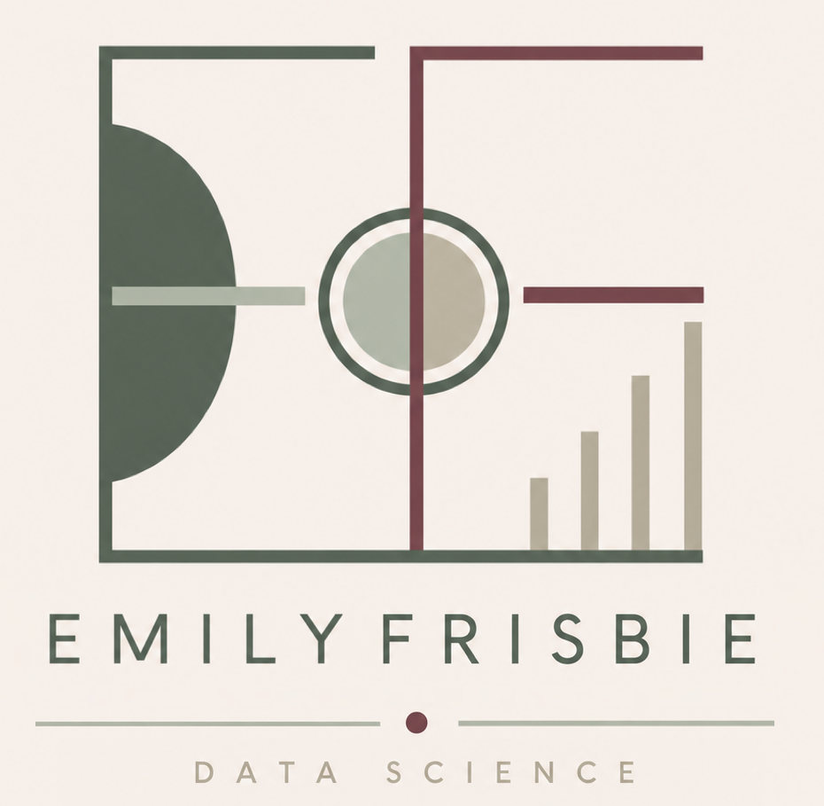

Entertainment Data Scientist | Data Analytics | Master's Capstone
I transform data into insights, blending technical expertise with storytelling. Transitioning from entertainment production into data science, I bring a unique perspective to solving complex analytical challenges.
About Me
Professional Background
With roots in reality television field production, I discovered a passion for data-driven decision-making. That passion led me to pursue a Master's degree in Data Science and Data Analytics, where I've developed expertise in machine learning, statistical analysis, and practical data engineering.
What I Do
I specialize in building supervised learning models, cleaning messy datasets, and translating complex analytical findings into actionable insights. My capstone project, Moodvie, is a mood-based movie recommendation system that demonstrates my ability to design, build, and deploy end-to-end machine learning solutions.
Personal Interests
Beyond data science, I'm passionate about storytelling, cinema, and the intersection of entertainment and analytics. I believe the best insights come from understanding both the technical and human sides of a problem.
Core Skills
Data Science & ML
- ✓ Supervised & Unsupervised Learning
- ✓ Model Evaluation & Optimization
- ✓ Feature Engineering
- ✓ Time Series Analysis
- ✓ XGBoost, Random Forest, Scikit-learn
Programming & Tools
- ✓ Python (pandas, numpy, scikit-learn)
- ✓ Data Visualization (Matplotlib, Seaborn)
- ✓ Web Deployment (Streamlit)
- ✓ SQL & Databases
- ✓ Git & Version Control
Ready to See My Work?
Explore my resume, projects, and the Moodvie capstone project below.
View All Projects See Moodvie